Cityscape Books
Accounting, project costing, payroll and customer support for Cityscape Decors (Interiors & Construction), modelled on Zoho Books and Zoho Desk.
| Item | Detail |
|---|---|
| Version | 1.3, all modules (Books + Support) |
| Date | 15 October 2026 |
| Prepared for | Development team (build with Claude Code) |
| Business owner | Saravanan S, Owner, Cityscape Decors |
| Reference prototype | Cityscape Books.dc.html, a clickable prototype of every screen in this document |
| Companion files | design_handoff_cityscape_books/README.md (screen-by-screen UI spec and design tokens) and Technical Spec.md (schema, API, security) |
Contents
- 1. Introduction
- 2. Users, roles & access
- 3. System-wide rules
- 4. Module requirements (23 modules, with screenshots)
- 5. Accounting postings
- 6. Data entities
- 7. Non-functional & security requirements
- 8. Out of scope for v1
- 9. Information needed from Cityscape Decors
- 10. User acceptance test scenarios
1. Introduction
1.1 Purpose
This document tells the developer exactly what Cityscape Books must do. It covers who uses it, what each screen does, the business rules and validations, and how each feature will be accepted. Every screenshot comes from the working prototype, which should be treated as the reference for layout, wording and behaviour.
1.2 Scope
One web application (desktop browser, plus a mobile layout for site engineers) covering:
- Sales: quotations with revisions, proforma invoices, GST tax invoices, credit notes, client receipts & advances
- Purchases: purchase orders, purchase bills, vendor payments, site expenses with photo proof and owner approval
- GST: GSTR-1, GSTR-3B summary, ITC register, HSN summary, advances (Table 11A/11B), GSTR-1 JSON export
- Cash, bank & UPI registers with statement matching
- Client and vendor outstanding with ageing
- Project-wise income, expenses and profit & loss, plus trial balance
- Payroll: monthly staff, daily-wage labour, contractors
- Inventory: material purchases by project
- Customer support: tickets with SLA, site visits with before/after photos, warranty register, knowledge base, ratings
- Admin panel: users, rights per module, project scoping, lock date, audit trail
1.3 How to use this document
- This document defines behaviour, rules and acceptance criteria. Requirement IDs (FR-x.y) are for tracking in tickets and test cases.
- The prototype defines look, copy and interaction. Open it next to this document. Its demo login lets you switch roles.
- Technical Spec.md defines the database schema, REST API, posting rules and security controls. Where this document and the spec disagree, this document wins; raise the conflict.
- All data in the prototype is sample data. Replace it with the opening balances and masters from Cityscape Decors (Part 9).
1.4 Definitions
| Term | Meaning |
|---|---|
| FY | Indian financial year, 1 April to 31 March. Current: FY 2026-27, shown as 26-27 in document numbers. |
| GSTIN | 15-character GST registration number. First two digits are the state code (Tamil Nadu = 33). |
| CGST / SGST / IGST | Same-state supply: CGST 9% + SGST 9%. Inter-state supply: IGST 18%. |
| SAC 9954 | Service code for construction / works contract. Default on every sales line. |
| ITC | Input tax credit, the GST on vendor bills that can be set off against output tax. |
| Proforma invoice | A payment request (advance or stage). Not a tax invoice and not posted to revenue. |
| Lock date | Books are closed up to this date. Nothing dated on or before it can be created, edited or deleted. |
| SLA | Service level agreement: the time allowed to first respond to and to resolve a support ticket. |
| AMC | Annual maintenance contract with a client after handover. |
| Pending / Approved | Expenses entered by non-approvers are Pending until the owner approves. Pending entries are excluded from all balances and reports. |
2. Users, roles & access
2.1 Roles
| Role | Who | Device | Summary |
|---|---|---|---|
| Owner | Saravanan S | Desktop | Full access to everything, always. Only role that sees profit, margins and net value by default. Only role that approves expenses and manages users. |
| Admin | Accounts | Desktop | Runs the books: invoices, receipts, bills, banking, GST, payroll. No profit view, no approvals. |
| Project Manager | Shiva | Desktop | Runs projects: quotations, proformas, invoices, POs, bills, expenses. Views support. |
| Asst. Manager · Project Management | (to be named) | Desktop | Supports the PM on projects, POs, bills and expenses. Handles support tickets with the owner. |
| Site Engineer | (to be named) | Mobile | Adds site expenses with bill photo for assigned sites. Completes service visits with before/after photos. |
2.2 Rights levels
| Level | Allows |
|---|---|
| None | Module hidden from navigation, search, notifications and the API. |
| View | Read lists, documents and reports. |
| Edit | View plus create and edit (within the lock date and status rules). |
| Full | Edit plus delete, cancel, and other destructive actions. |
Rights are stored per user. A role is only a template that pre-fills a new user’s rights; the owner can change any module for any user. Users & security is owner-only and cannot be granted.
2.3 Default rights by role
The owner has Full on every module. Defaults for the other roles:
| Module | Admin | Project Manager | Asst. Manager | Site Engineer |
|---|---|---|---|---|
| Dashboard | View | View | View | — |
| Projects & ledger | Full | Edit | Edit | View |
| Clients & vendors | Full | Edit | View | — |
| Quotations | Full | Edit | Edit | — |
| Proforma invoices | Full | Edit | View | — |
| Tax invoices & credit notes | Full | Edit | View | — |
| Client receipts & advances | Full | Edit | View | — |
| Purchase orders | Full | Edit | Edit | — |
| Purchase bills & vendor payments | Full | Edit | Edit | — |
| Expenses | Full | Edit | Edit | Edit |
| Approve expenses | — | — | — | — |
| Profit, margins & net value | — | — | — | — |
| Cash, bank & UPI | Full | — | — | — |
| Outstanding | View | View | View | — |
| GST returns | Full | View | — | — |
| Reports | View | View | View | — |
| Payroll | Full | — | — | — |
| Inventory | Full | Edit | Edit | View |
| Support tickets & visits | View | View | Full | — |
| Warranty register | View | View | Edit | — |
| Knowledge base & templates | View | View | Full | — |
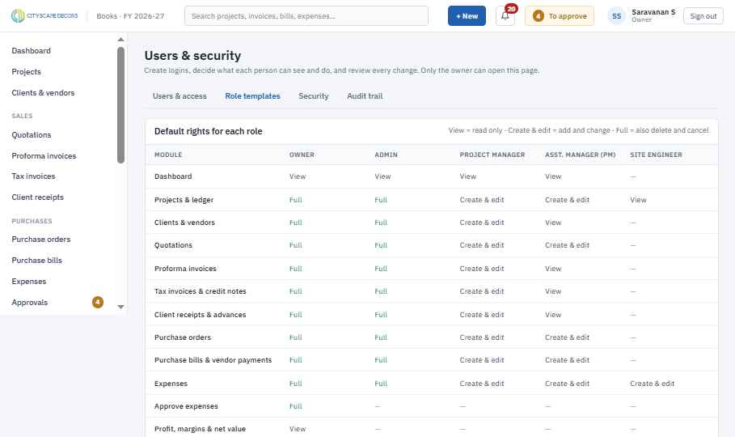
2.4 Project scoping
| ID | Requirement |
|---|---|
| FR-2.4.1 | Each user has project access of All projects or Selected projects only. |
| FR-2.4.2 | A scoped user sees only their projects and the invoices, receipts, expenses, bills, POs, proformas, tickets, labour, contractors, items and bank lines tagged to them, in lists, search, notifications, reports and the API. |
| FR-2.4.3 | A Site Engineer can always see and complete site visits assigned to them, even on a project outside their scope. |
| FR-2.4.4 | Scoping and rights are enforced on the server for every endpoint. The UI only hides what the server already refuses. |
3. System-wide rules
3.1 Document numbering
| Document | Format | Rule |
|---|---|---|
| Project | CSD-PRJ-0001 | Sequential, never reused |
| Quotation | QT/26-27/0001 | Per FY. Revisions keep the number and add Rev 1, Rev 2… |
| Proforma invoice | PI/26-27/0001 | Per FY |
| Tax invoice | CSD/26-27/0001 | Gapless per FY, allocated in the same DB transaction as the invoice |
| Credit note | CN/26-27/0001 | Per FY, issued when an invoice is cancelled |
| Receipt | RCT/26-27/0001 | Per FY |
| Purchase order | PO/26-27/0001 | Per FY |
| Support ticket | TKT-0001 | Sequential, tickets are never deleted |
3.2 GST
| ID | Requirement |
|---|---|
| FR-3.2.1 | Company state code is 33 (Tamil Nadu). If the client’s state code is 33, the invoice charges CGST 9% + SGST 9%; otherwise IGST 18%. The same rule applies to quotations and proformas. |
| FR-3.2.2 | For vendor bills and POs, the split is decided by the vendor GSTIN’s first two digits. A vendor with no GSTIN carries no GST and gives no input credit. |
| FR-3.2.3 | Default SAC is 9954 on every sales line; it can be overridden per line. |
| FR-3.2.4 | GSTIN format is validated with ^\d{2}[A-Z]{5}\d{4}[A-Z][1-9A-Z]Z[0-9A-Z]$ and the first two digits must match the chosen state. |
| FR-3.2.5 | Amounts in words use the Indian system (Crore, Lakh, Thousand). |
3.3 Lock date, approvals and audit
| ID | Requirement |
|---|---|
| FR-3.3.1 | The owner sets a books lock date (Users & security → Security). Any create, edit or delete dated on or before it is refused with “Books are locked till DD MMM YYYY. Pick a later date.” |
| FR-3.3.2 | Expenses saved by anyone without the Approve right are Pending. Pending entries are excluded from project balances, banking, reports, P&L and GST until approved. Editing an approved expense without the Approve right sends it back to Pending. |
| FR-3.3.3 | Every create, edit, delete, approval, rejection, payment, sign-in, rights change and lock change writes an append-only audit row (when, who, what, before/after). |
| FR-3.3.4 | Tax invoices are never deleted. They are cancelled with a credit note. Tickets are never deleted; they are closed. |
3.4 Shell: navigation, search, notifications
| ID | Requirement |
|---|---|
| FR-3.4.1 | Left navigation is grouped: Dashboard, Projects, Clients & vendors · Sales · Purchases · Accounts · Support · Operations. Items the user has no right to are hidden. |
| FR-3.4.2 | Global search (2+ characters) finds projects, quotes, proformas, POs, invoices, bills, expenses and tickets the user can see. |
| FR-3.4.3 | + New menu: Expense, Client receipt, Quotation, Proforma, Tax invoice, Purchase order, Purchase bill, Support ticket, Project, filtered by the Edit right. |
| FR-3.4.4 | In-app notifications (bell with unread count): expenses awaiting approval, project budget ≥85% or over 100%, quote expiring in ≤3 days or expired, overdue proforma, overdue invoice, bill due within 7 days, ticket SLA breached or due soon. |
| FR-3.4.5 | Every list and report has Export CSV. Invoices, quotations, proformas, POs and payslips have Print / PDF in A4 layout. |
| FR-3.4.6 | Formatting: ₹ with lakh/crore grouping (en-IN), dates as DD MMM YYYY, FY April–March. |
4. Module requirements
Each module lists its purpose, the screen, numbered functional requirements and acceptance criteria. Requirement IDs are FR-<module>.<n>.
4.1 Login
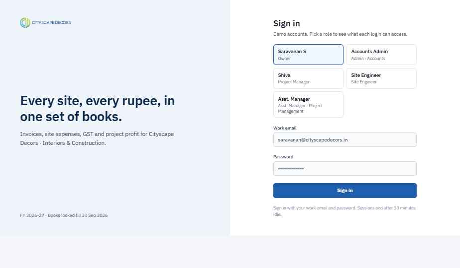
| ID | Requirement |
|---|---|
| FR-1.1 | Single-step login with work email and password. No SMS or OTP. |
| FR-1.2 | 5 failed attempts lock the account for 15 minutes and notify the owner. New users set their password from an emailed invite link; “Forgot password” sends a reset link by email (single-use, 24-hour expiry). |
| FR-1.3 | Sessions end after 30 minutes idle. Deactivated users cannot sign in, but their entries remain in the books and audit trail. |
| FR-1.4 | Site Engineers land on the mobile layout; all other roles land on the desktop dashboard. |
- A wrong password shows an error and does not sign in; the 5th failure locks the account for 15 minutes.
- A deactivated user is refused at step 1.
4.2 Dashboard
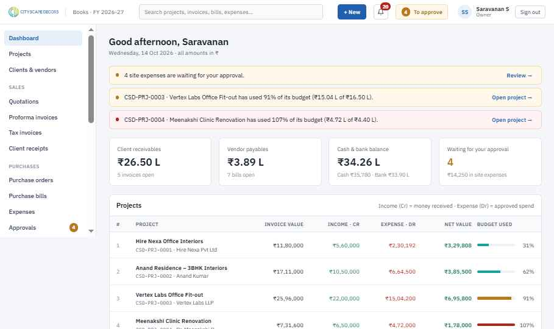
| ID | Requirement |
|---|---|
| FR-2.1 | Greeting, date, then alert banners: pending approvals (approvers only), budget ≥85% (amber) or >100% (red) with a link to the project. |
| FR-2.2 | KPI cards: Client receivables, Vendor payables, Cash & bank balance (banking right), then Waiting for your approval (approvers) or Collected this year. |
| FR-2.3 | Projects table: project, invoice value, Income · Cr, Expense · Dr, Net value only with the profit right, budget-used bar. Clicking a row opens the project. |
| FR-2.4 | Spend-by-category donut and receivables ageing (Current, 1–30, 31–60, 61–90, 90+). |
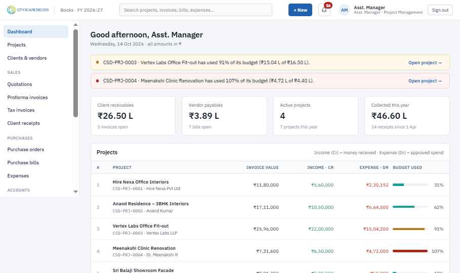
4.3 Projects & project ledger
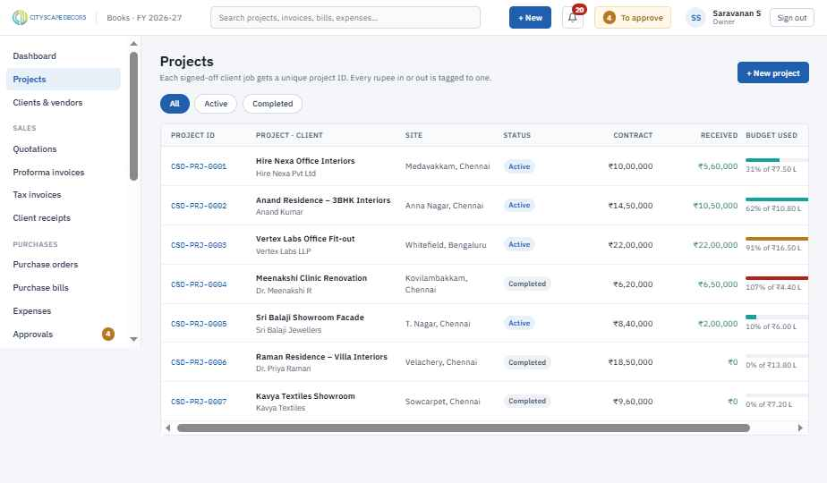
| ID | Requirement |
|---|---|
| FR-3.1 | List filter chips All / Active / Completed; columns ID, Project · client, Site, Status, Contract, Received, Budget used. “+ New project” needs Projects ≥ Edit. |
| FR-3.2 | New project: name, client (pick or add), site, contract value, cost budget (required, drives overspend alerts), engineer, manager. |
| FR-3.3 | Project header: code, status, name, client · site · start · engineer · manager. Actions: Record receipt, Edit project, New proforma, New invoice, + Add expense (each by right). |
| FR-3.4 | Stats strip: Contract value, Invoiced (incl. GST), Received · Cr, Spent · Dr, Balance in hand, Profit so far (profit right only), Budget used. |
| FR-3.5 | Ledger tab reproduces the client’s Excel sheet: S.No, Date, Particulars, Type, Receipts, Payments, Paid by, Mode, Paid to, Bill/ref, running Balance. Running balance counts approved entries only; pending rows are tinted and labelled “Awaiting owner approval”. |
| FR-3.6 | An inline row at the bottom of the ledger adds an expense like a spreadsheet (date, particulars, category, amount, paid by, mode, paid to, attach bill; Enter saves). Hidden on completed projects and for users without Edit. |
| FR-3.7 | Other tabs: Spend by category, Invoices & receipts (with proformas and advances held), Vendor bills, Profit & loss (profit right only). |
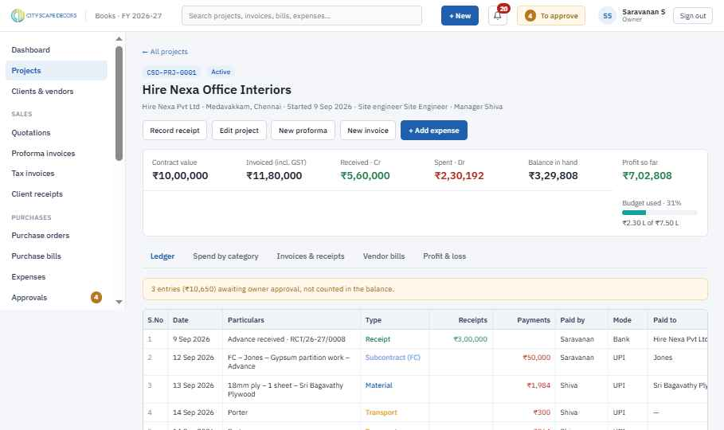
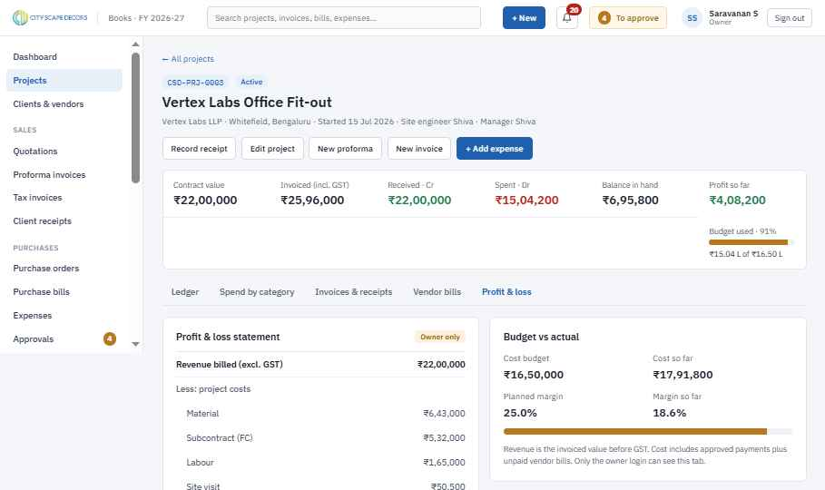
- Ledger balance equals approved receipts minus approved payments.
- A pending expense appears in the ledger but does not change the balance until approved.
- A Project Manager never sees profit, margin or net value anywhere, including CSV exports.
4.4 Clients & vendors
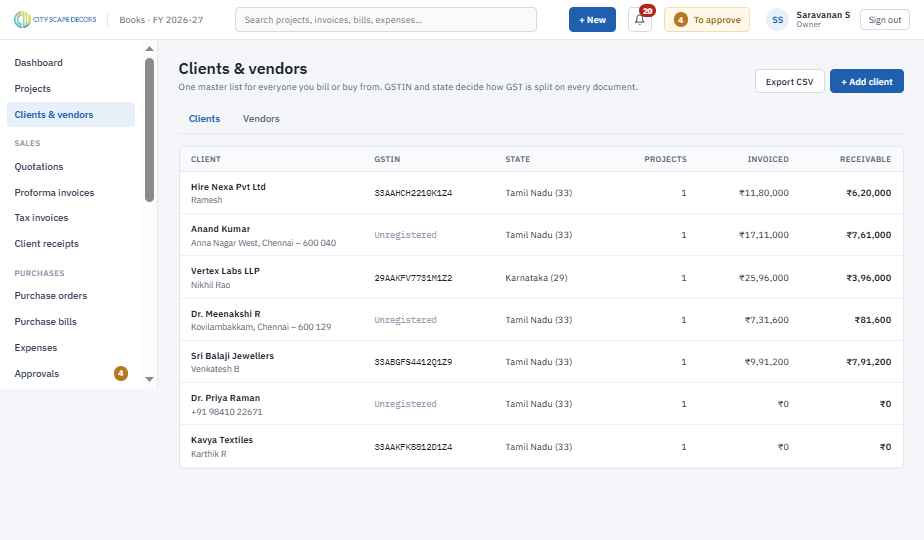
| ID | Requirement |
|---|---|
| FR-4.1 | Tabs Clients / Vendors. Clients: name + contact, GSTIN, state, projects, invoiced, receivable. Vendors: name, GSTIN, state, POs, bills, billed, payable. |
| FR-4.2 | Add/edit form: name (unique), contact, phone, GSTIN (optional, validated), state (decides GST split), address. |
| FR-4.3 | Vendors typed on a bill or PO are added to the master automatically; picking a known vendor fills in the GSTIN. |
4.5 Quotations
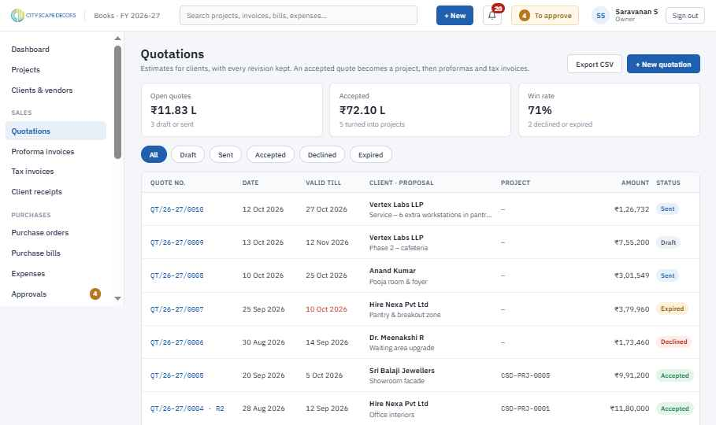
| ID | Requirement |
|---|---|
| FR-5.1 | List chips All / Draft / Sent / Accepted / Declined / Expired; cards Open quotes, Accepted, Win rate (accepted ÷ accepted + declined + expired). |
| FR-5.2 | Form: client, proposal title, site, quote date, valid till, discount % (0–50), line grid (description, qty, unit, rate), terms. Live totals with the GST split from the client’s state. |
| FR-5.3 | Status flow Draft → Sent → Accepted / Declined. A Sent quote past “valid till” shows as Expired (derived, not stored). |
| FR-5.4 | Revise keeps the number, increments the revision, stores the previous version (rev, date, total, status) in history and resets to Draft. The view shows full revision history. |
| FR-5.5 | Accept opens “Accept quotation & create project”: name and site pre-filled, contract value = quoted taxable value, cost budget (default 75%) with live planned margin. Creates the project linked to the quote. |
| FR-5.6 | From an accepted quote: Create proforma (30/40/50/100% of the quote) or Create tax invoice (lines copied, discount applied to rates). |
| FR-5.7 | A service quotation raised from a support ticket links to the ticket’s existing project when accepted and does not create a new project. |
| FR-5.8 | Only Draft quotes can be deleted (Quotations = Full). |
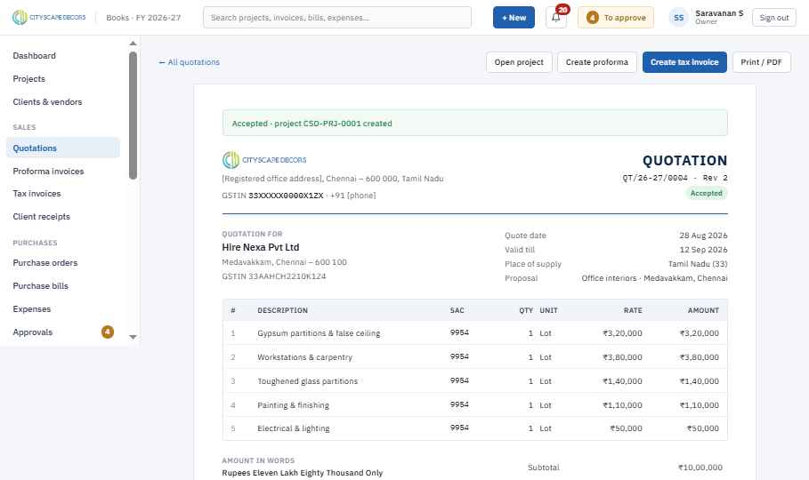
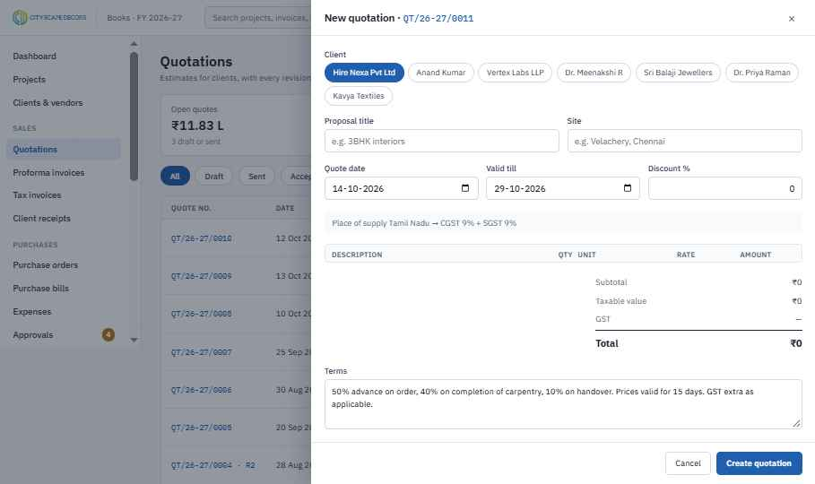
4.6 Proforma invoices
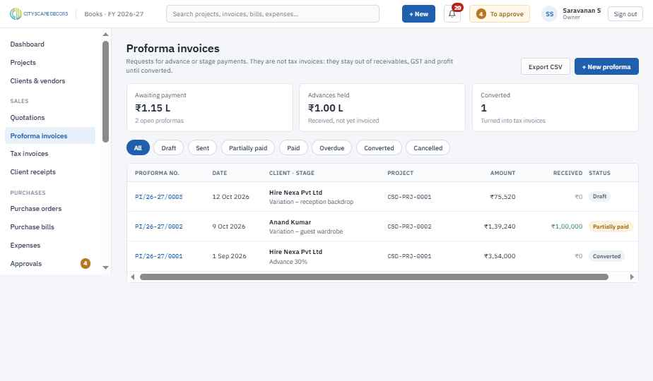
| ID | Requirement |
|---|---|
| FR-6.1 | A proforma is a payment request for an advance or stage. It is not a tax invoice and is excluded from receivables, ageing, revenue, P&L and the GSTR-1 B2B table. |
| FR-6.2 | List chips All / Draft / Sent / Partially paid / Paid / Overdue / Converted / Cancelled; cards Awaiting payment, Advances held, Converted. |
| FR-6.3 | Form: project, stage name (e.g. Advance 30%), date, payment due, lines. GST split from the project’s client. |
| FR-6.4 | “Record advance” records a receipt against the proforma. It is held as a customer advance (liability) and shown on the project as “₹X held as customer advance”. |
| FR-6.5 | Convert to tax invoice creates the next CSD/26-27/#### dated today with the same lines, moves every advance onto the new invoice, and marks the proforma Converted. |
| FR-6.6 | Edit and Cancel are allowed only while no advance has been received. |
| FR-6.7 | GST on advances: tax is due when an advance is received. It is reported in GSTR-1 Table 11A and reversed in 11B in the month the invoice is raised (see 4.15). |
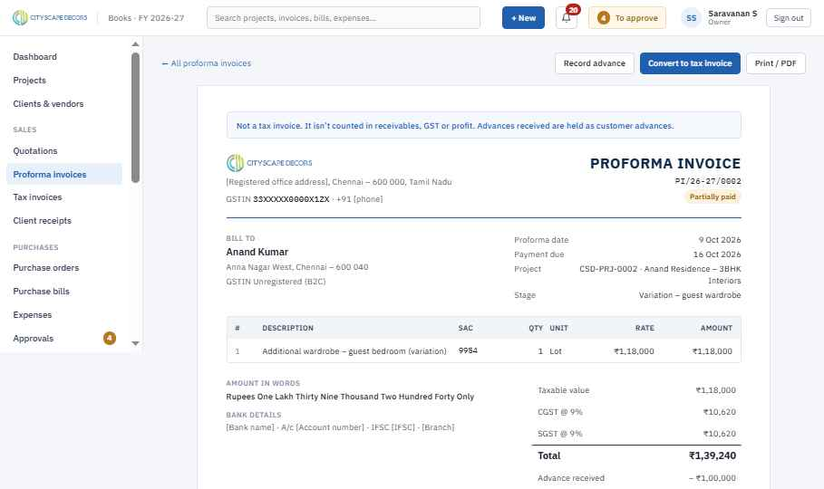
- After conversion, the invoice shows the advance as already received and its balance due is total minus advance.
- A proforma never appears in Outstanding.
4.7 Tax invoices & credit notes
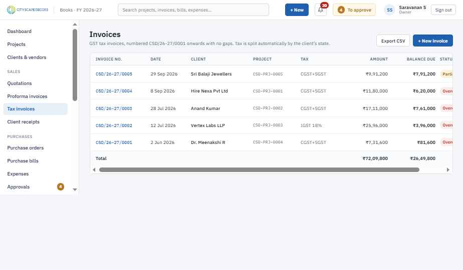
| ID | Requirement |
|---|---|
| FR-7.1 | List: No, Date, Client, Project, Tax type, Amount, Balance due, Status (Unpaid / Partially paid / Paid / Overdue / Cancelled). Due date = invoice date + 15 days. |
| FR-7.2 | Invoice view: logo, company address and GSTIN, “TAX INVOICE” and number, bill-to with GSTIN, invoice and due date, place of supply, project, lines (#, Description, SAC, Qty, Unit, Rate, Amount), taxable value, CGST/SGST or IGST, total, amount in words, bank details, payments received, signature block. |
| FR-7.3 | Edit only when there are no receipts and the date is after the lock date. |
| FR-7.4 | Cancel (Invoices = Full, no receipts) issues credit note CN/26-27/####; the invoice stays on record as Cancelled. |
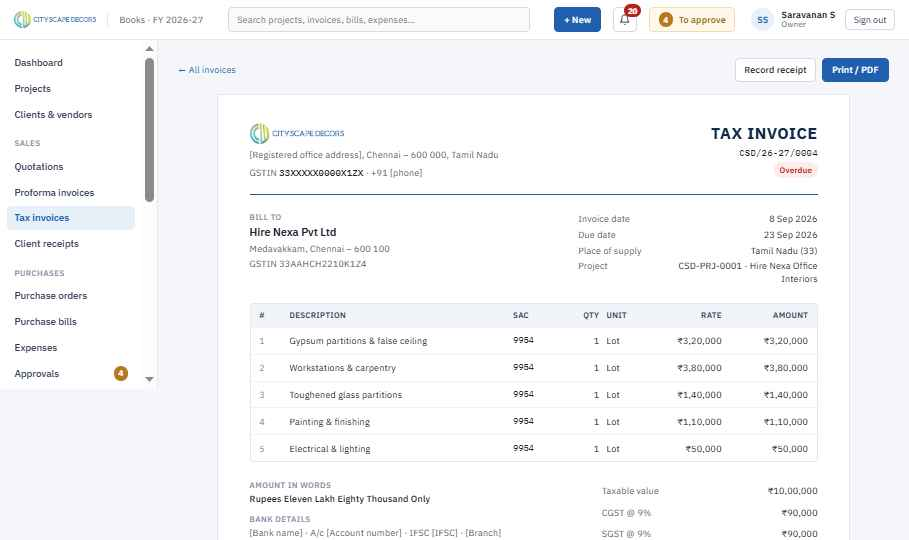
4.8 Client receipts & advances
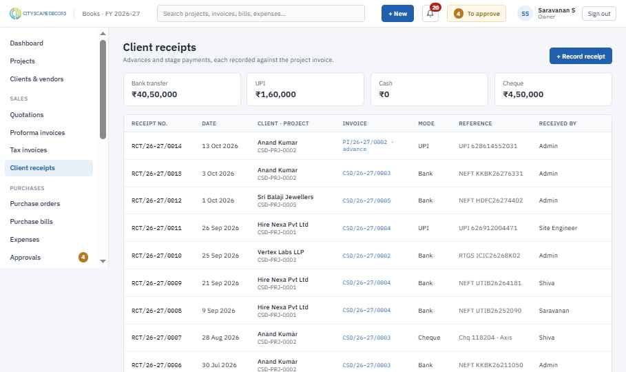
| ID | Requirement |
|---|---|
| FR-8.1 | Mode totals: Bank / UPI / Cash / Cheque. Table: receipt no, client · project, invoice or proforma, mode, reference, received by, amount. |
| FR-8.2 | Form: pick an open tax invoice or open proforma, date, amount (with a “Full ₹x” shortcut), mode, reference (label changes with mode: UTR, UPI transaction ID, cheque no & bank), received by. |
| FR-8.3 | Validation: amount > 0 and ≤ balance due; reference required unless Cash; date after the lock date. |
| FR-8.4 | Deleting a receipt needs Receipts = Full and a date after the lock date. |
4.9 Purchase orders
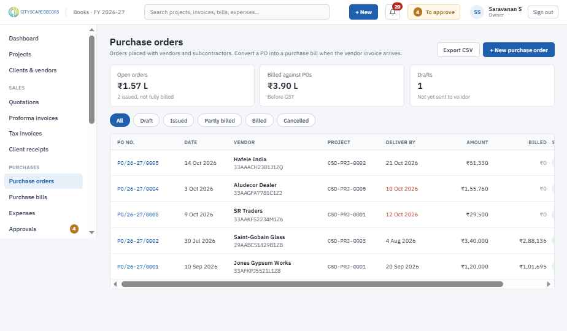
| ID | Requirement |
|---|---|
| FR-9.1 | List chips All / Draft / Issued / Partly billed / Billed / Cancelled; cards Open orders (unbilled value), Billed against POs, Drafts. Deliver-by turns red when overdue and not billed. |
| FR-9.2 | Form: vendor (from master, GSTIN auto-fill), GSTIN, deliver-to project, GST rate 0/5/12/18/28, PO date, deliver by, lines, terms. |
| FR-9.3 | Draft → Issued. Partly billed / Billed are derived from linked bills. Cancel only when no bill is linked. Only Drafts can be deleted. |
| FR-9.4 | Convert to bill opens the bill form pre-filled with vendor, GSTIN, project, rate and the remaining unbilled value, linked to the PO. A PO posts nothing to the ledger. |
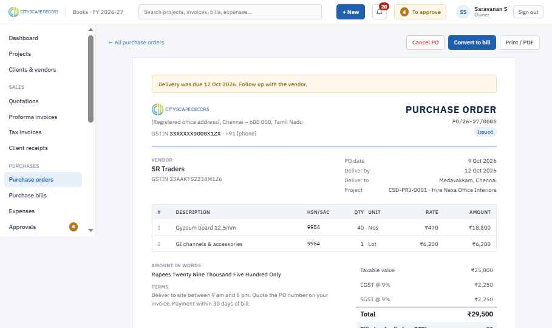
4.10 Purchase bills & vendor payments
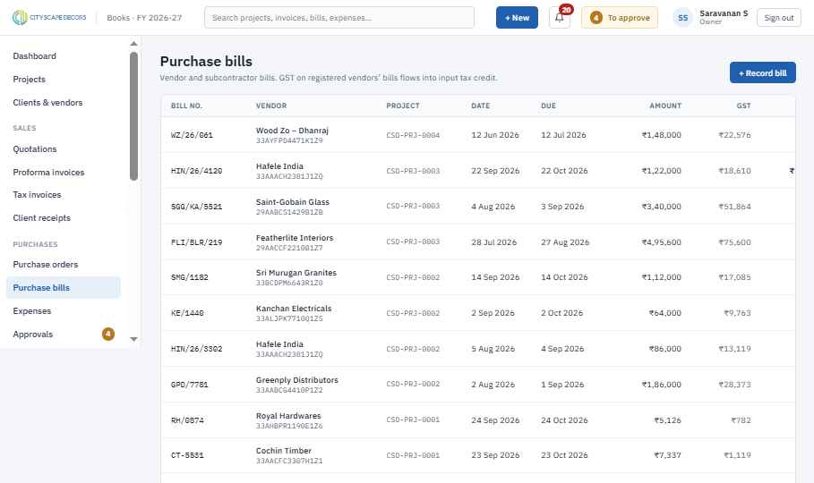
| ID | Requirement |
|---|---|
| FR-10.1 | Table: Bill no, Vendor + GSTIN, Project, Date, Due, Amount, GST, Balance, Status, actions. |
| FR-10.2 | Bill form: vendor, GSTIN, bill no, dates, project, category, taxable amount, GST rate. IGST if vendor state ≠ 33, else CGST + SGST; no GSTIN means no GST and no ITC. |
| FR-10.3 | Pay: amount, date, mode, reference, paid by. It reduces the bill balance and posts an approved project expense linked to the bill. |
| FR-10.4 | Edit only after the lock date and never below the amount already paid. Delete only unpaid bills (Bills = Full). |
4.11 Expenses
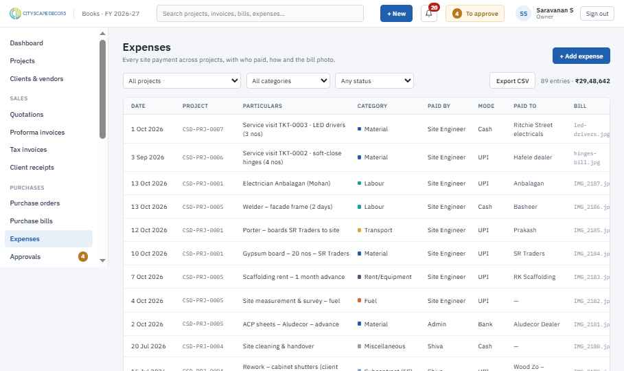
| ID | Requirement |
|---|---|
| FR-11.1 | Filters: project, category, status, with live count and total; Export CSV. |
| FR-11.2 | Columns: Date, Project, Particulars, Category, Paid by, Mode, Paid to, Bill (opens photo), Amount, Status, Edit/Delete. |
| FR-11.3 | Categories (9): Material, Labour, Subcontract (FC), Transport, Fuel, Miscellaneous, Incentives, Site visit, Rent/Equipment. |
| FR-11.4 | “Paid by” is a label on each expense: Saravanan, Shiva, Admin, Site Engineer. There is no petty-cash wallet. |
| FR-11.5 | Mode: UPI / Cash / Bank. Bill or receipt photo is required. |
| FR-11.6 | Edit needs Expenses ≥ Edit, Delete needs Full. Both are hidden for locked dates and for entries auto-created by bill, contractor or wage payments. |
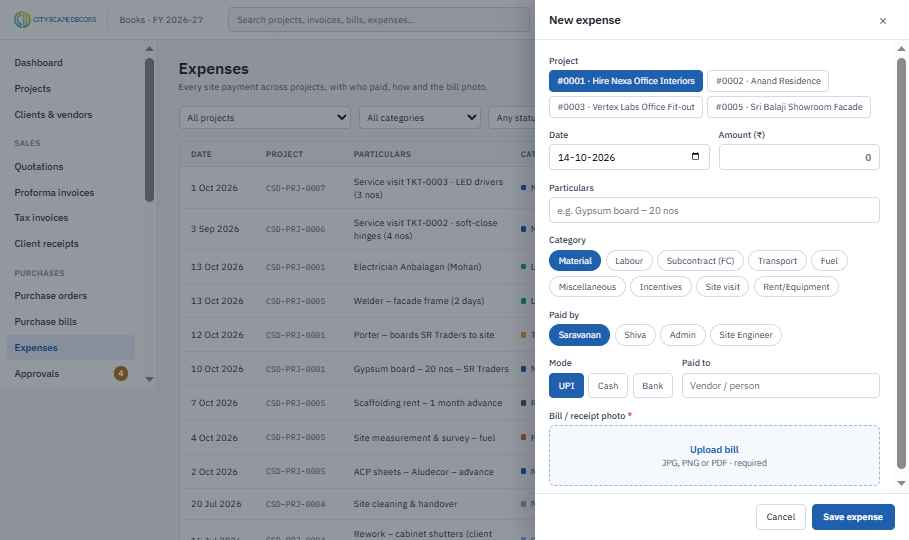
4.12 Approvals
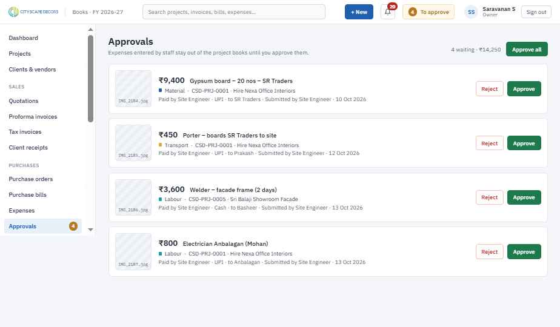
| ID | Requirement |
|---|---|
| FR-12.1 | Visible only with Approve = Full (owner by default). Cards show the bill thumbnail, amount, particulars, category · project, paid by · mode · to, submitted by and date. |
| FR-12.2 | Approve, Reject, and Approve all. Every site expense needs owner approval, whatever the amount. |
| FR-12.3 | Empty state: “All caught up.” |
4.13 Cash, bank & UPI
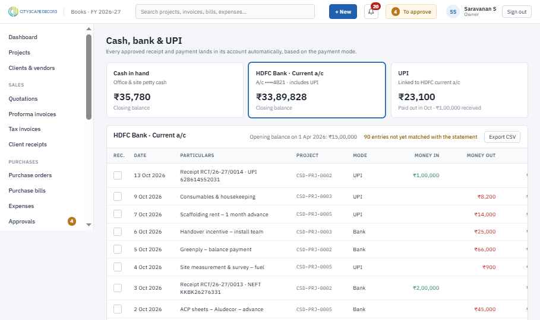
| ID | Requirement |
|---|---|
| FR-13.1 | Account cards: Cash in hand, HDFC current account, UPI (linked to HDFC). Opening balances come from the client (Part 9). |
| FR-13.2 | Register: match tick (statement reconciliation), Date, Particulars, Project, Mode, Money in, Money out, Running balance; “N entries not yet matched”. |
| FR-13.3 | Spending by staff: totals by Paid-by label split UPI / Cash / Bank. |
4.14 Outstanding
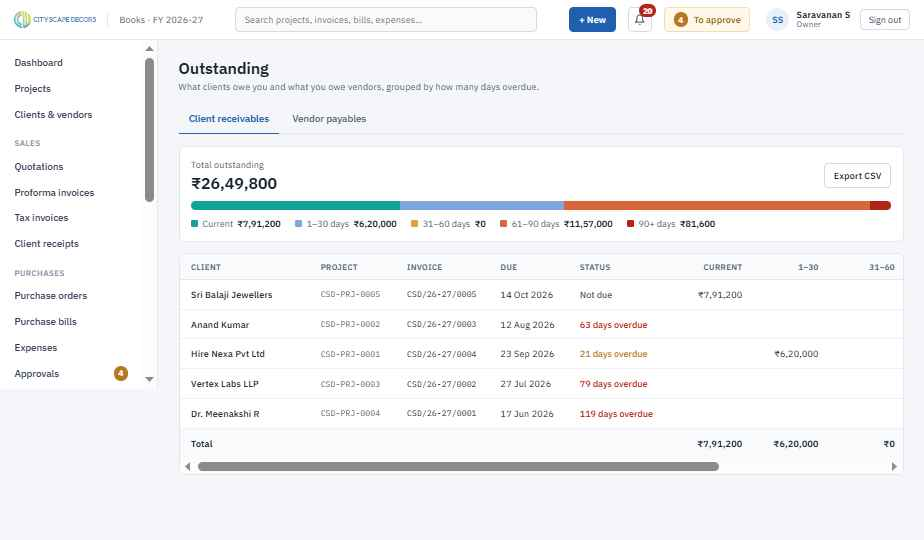
| ID | Requirement |
|---|---|
| FR-14.1 | Tabs Client receivables and Vendor payables. Each has a stacked ageing bar, a table with one column per bucket (Current, 1–30, 31–60, 61–90, 90+), days overdue (amber > 0, red > 60) and totals; Export CSV. |
| FR-14.2 | Proformas and pending expenses are excluded. |
4.15 GST returns
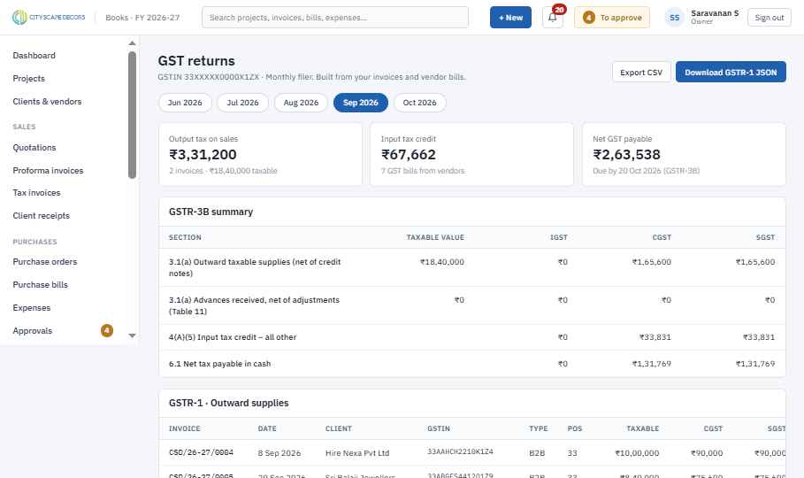
| ID | Requirement |
|---|---|
| FR-15.1 | Month chips; cards Output tax, Input tax credit, Net payable or ITC carried forward, with the due date (20th of next month). |
| FR-15.2 | GSTR-3B summary: 3.1(a) outward supplies net of credit notes, 3.1(a) advances net of adjustments, 4(A)(5) ITC, 6.1 tax payable in cash. |
| FR-15.3 | GSTR-1: B2B/B2C, place of supply, CGST/SGST/IGST; HSN 9954 summary; credit notes table. |
| FR-15.4 | Advances table: 11A (advances received this month and not invoiced in the same month, tax = amount × 18/118) and 11B (earlier advances adjusted against invoices raised this month). |
| FR-15.5 | ITC register marks each bill Eligible or No ITC. |
| FR-15.6 | Downloads: GSTR-1 JSON in the GST offline-tool shape (b2b, b2cs, hsn) and CSV. |
4.16 Reports & trial balance
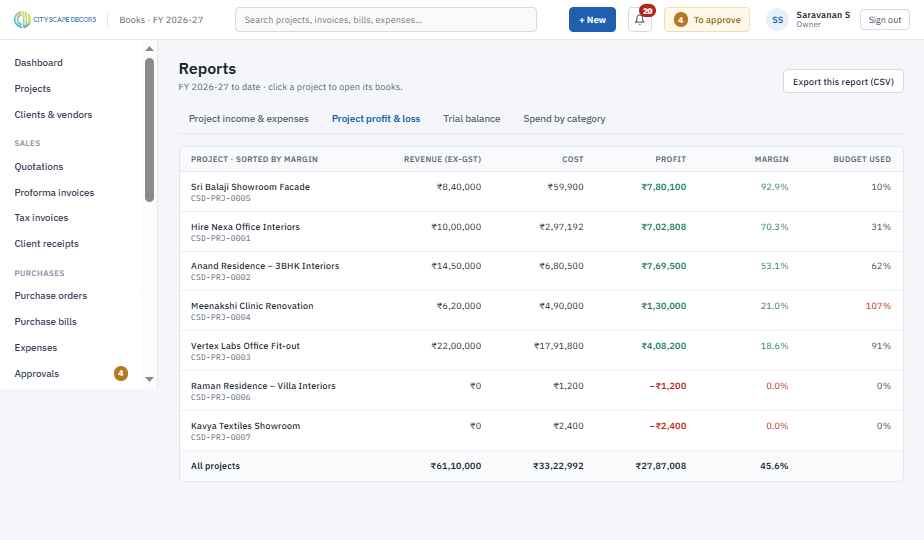
| ID | Requirement |
|---|---|
| FR-16.1 | Tabs: Project income & expenses; Project profit & loss (profit right only); Spend by category (pivot of categories × projects); Trial balance (profit right only). |
| FR-16.2 | P&L definition: Revenue = invoiced taxable value (excl. GST, excl. cancelled). Cost = approved expenses + unpaid vendor bills. Profit = revenue − cost. Margin = profit ÷ revenue. |
| FR-16.3 | Trial balance lists every account with debit and credit and shows a green “Debits equal credits” check, or a red “Out of balance” warning. |
| FR-16.4 | Each tab has “Export this report (CSV)”. |
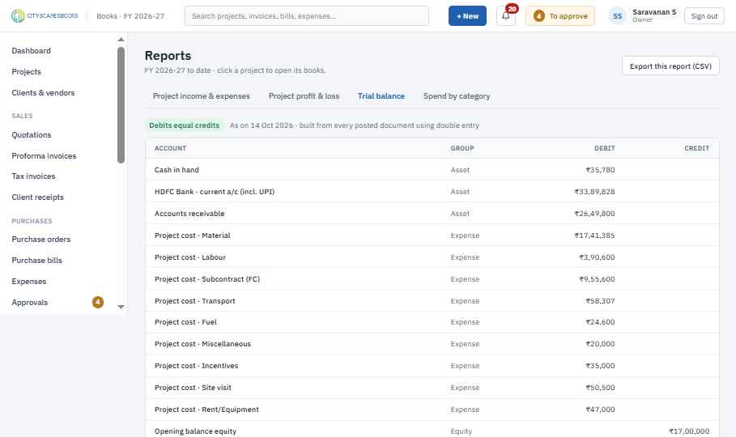
4.17 Payroll
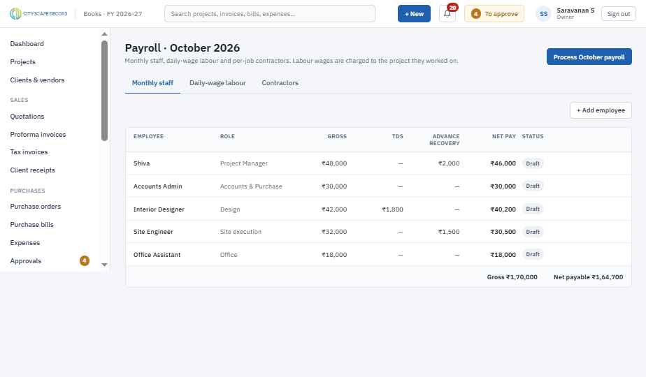
| ID | Requirement |
|---|---|
| FR-17.1 | Monthly staff: gross, TDS, advance recovery, net. “Process payroll” for the month, then a payslip per person (printable). No PF/ESI in v1. |
| FR-17.2 | Daily-wage labour: rate, days (+1 attendance button), earned, paid, balance. “Pay wages” posts a Labour expense to the worker’s project. |
| FR-17.3 | Contractors paid per job: job value, paid, balance, progress. “Pay” posts a Subcontract (FC) expense to the project. |
| FR-17.4 | Add buttons: + Add employee, + Add worker, + Add contract job. |
4.18 Inventory
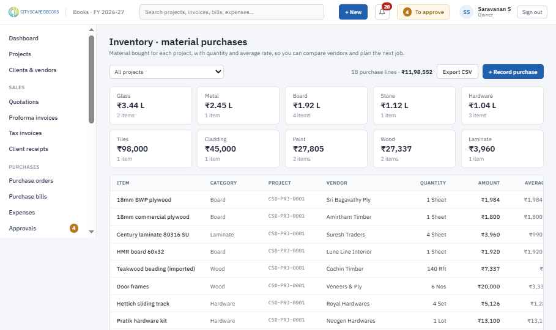
| ID | Requirement |
|---|---|
| FR-18.1 | Simple purchase tracking only (no stock levels, no warehouse transfers in v1). |
| FR-18.2 | Filter by project; category summary cards; table of item, category, project, vendor, quantity + unit, amount, average rate. + Record purchase and Export CSV. |
4.19 Support tickets
An internal service desk modelled on Zoho Desk. Clients do not log in; staff log every call, walk-in or message. Handlers are the Owner and the Asst. Manager.
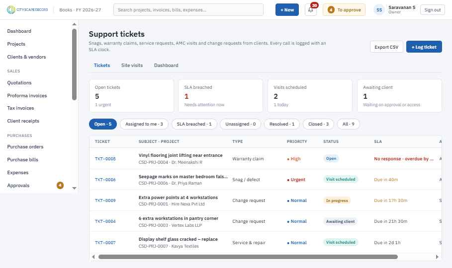
| ID | Requirement |
|---|---|
| FR-19.1 | Ticket types: Snag / defect, Warranty claim, Service & repair, AMC visit, Billing query, Change request. Received via: Phone call, Walk-in, WhatsApp, Email, Site visit. |
| FR-19.2 | Log ticket form: project, type, coverage (shown live), subject, description, priority, received via, caller name and phone, assign to. |
| FR-19.3 | Statuses: Open → In progress → Awaiting client / Visit scheduled → Resolved → Closed. Reopening clears the resolved time and rating. A ticket cannot be resolved while a visit is still scheduled. |
| FR-19.4 | SLA by priority (calendar hours from logging). First response: Urgent 1h, High 4h, Normal 8h, Low 24h. Resolution: Urgent 4h, High 24h, Normal 3 days, Low 7 days. |
| FR-19.5 | The first logged reply or call stamps the first response time; internal notes do not. SLA shows Due in…, Overdue by…, Responded in… or Missed. |
| FR-19.6 | Queue: cards Open, SLA breached, Visits scheduled, Awaiting client; views Open, Assigned to me, SLA breached, Unassigned, Resolved, Closed, All; breached tickets sort first. |
| FR-19.7 | Coverage is decided when the ticket is logged: within the project warranty = In warranty (free); after warranty = chargeable; not yet handed over = fix under contract; AMC visit = covered while AMC is active; change request = chargeable. |
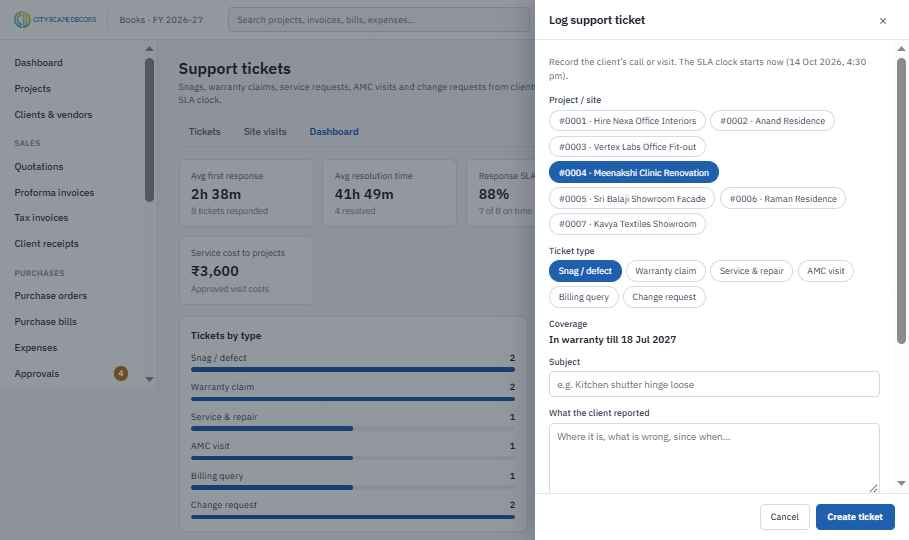
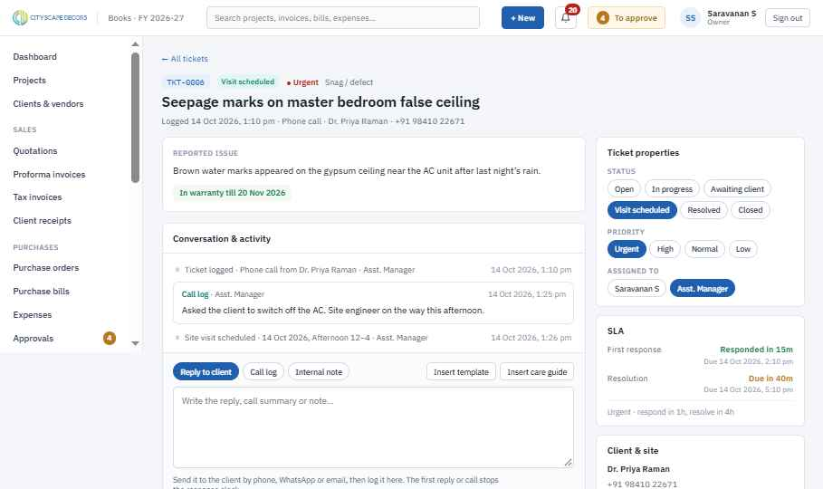
| ID | Requirement |
|---|---|
| FR-19.8 | Activity thread with system events, Reply to client, Call log and Internal note. Composer can insert a reply template (placeholders {client}, {ticket}, {project}, {engineer}, {date} filled from the ticket) or a care guide. |
| FR-19.9 | Schedule site visit: date, slot (Morning 9–12, Afternoon 12–4, Evening 4–7), site engineer, instructions. Ticket becomes Visit scheduled. Visits can be cancelled. |
| FR-19.10 | Billing card: chargeable / free toggle; Create quotation and Raise tax invoice (both linked to the ticket); list of linked documents and costs charged to the project. |
| FR-19.11 | Customer rating 1–5 stars with comment, recorded by staff after Resolved/Closed. |
| FR-19.12 | Support dashboard: average first response, average resolution, response and resolution SLA met %, customer rating, service cost charged to projects; charts by type, status and project; team workload; SLA targets. |
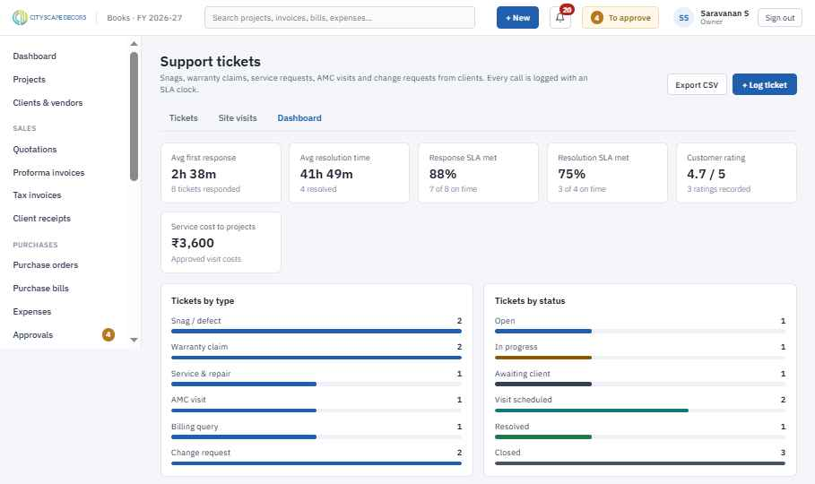
- A High ticket logged at 11:00 with no reply shows “No response · overdue” after 15:00 and raises a notification.
- Completing a visit with a ₹1,200 cost creates a Pending expense on the ticket’s project that appears in Approvals.
- A ticket on a project whose warranty ended is marked chargeable at creation.
4.20 Warranty register
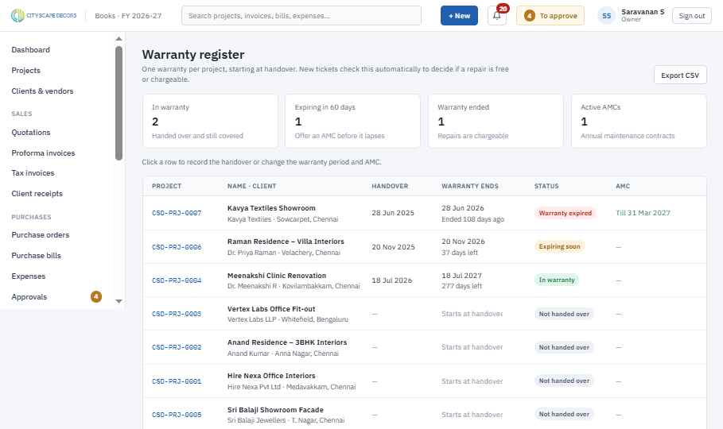
| ID | Requirement |
|---|---|
| FR-20.1 | One warranty per project, starting at handover. Columns: project, name · client, handover, warranty ends (days left), status (In warranty / Expiring soon ≤60 days / Warranty expired / Not handed over), AMC, open/total tickets, approved repair cost. |
| FR-20.2 | Clicking a row (Warranty ≥ Edit) opens Record handover / Edit warranty: handover date (not in the future, not before project start), period (6 months, 1, 2 or 5 years), AMC valid till (optional). |
| FR-20.3 | Recording a handover marks the project Completed. |
4.21 Knowledge base
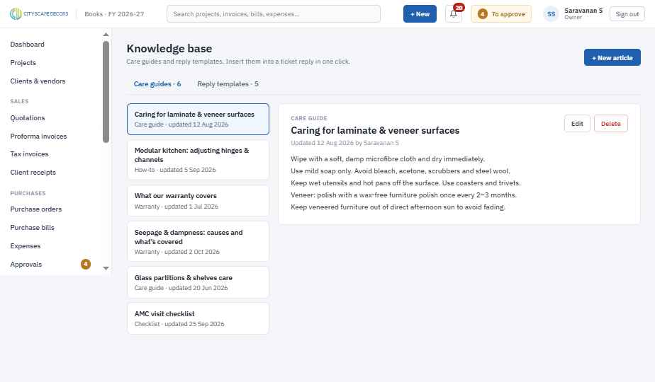
| ID | Requirement |
|---|---|
| FR-21.1 | Care guides tab: list and reader; categories Care guide, Warranty, How-to, Checklist. Reply templates tab: cards with name and message. |
| FR-21.2 | KB ≥ Edit can create and edit; KB = Full can delete. Both are insertable into ticket replies. |
4.22 Users & security (owner admin panel)
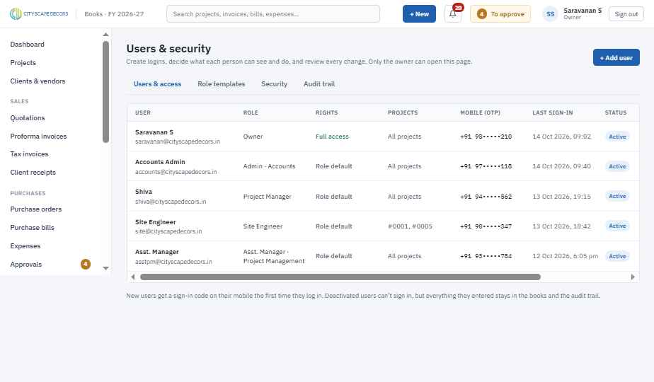
| ID | Requirement |
|---|---|
| FR-22.1 | Users table: name + email, role, rights (Full access / Role default / Custom rights), projects, mobile, last sign-in, status. Edit rights, Deactivate / Activate. The owner row is fixed. |
| FR-22.2 | User drawer: name, work email (unique), mobile (10 digits, contact only), role (Admin, Project manager, Asst. Manager · Project Management, Site engineer), project access, rights by module (None / View / Edit / Full). Changing role resets to its template; “Reset to role defaults” when customised. |
| FR-22.3 | Security tab: books lock date editor and policy list. Audit trail tab: when, who, what changed, newest first. |
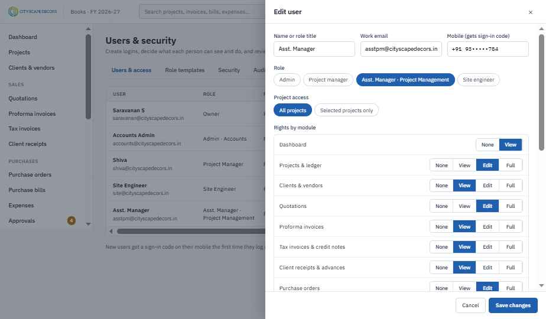
4.23 Site Engineer mobile app
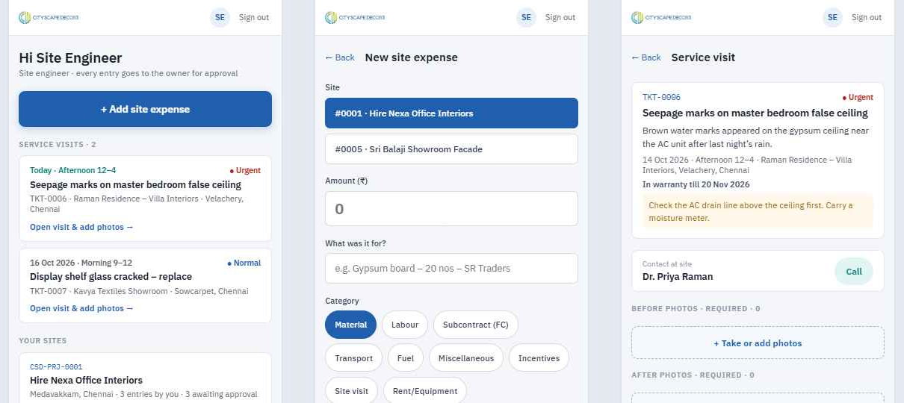
| ID | Requirement |
|---|---|
| FR-23.1 | Mobile layout, max width 430px, touch targets ≥ 44px. Build as a PWA with an offline draft queue and idempotency keys. |
| FR-23.2 | Home: “+ Add site expense”, service visits assigned to me (today in teal, overdue in red), my sites, my entries with Pending / Approved / Rejected. |
| FR-23.3 | Add expense: site, amount, what it was for, category, paid by, mode, paid to, date, photo of bill (required) using the camera. Every entry goes to the owner for approval. |
| FR-23.4 | Service visit: job details, coverage, instructions, Call button, before photos (required), after photos (required), what was done (required), optional cost with category, mode and bill photo (required if a cost is entered). |
| FR-23.5 | Completing a visit marks it Completed, moves the ticket to In progress, logs the work note, and charges any cost to the project as a Pending expense. |
| FR-23.6 | Photos are downscaled (about 1000px JPEG) before upload and EXIF GPS is stripped on the server. |
5. Accounting postings
Every document posts a balanced double-entry journal. Screens are views over documents; reports are views over the journal.
| Event | Debit | Credit |
|---|---|---|
| Tax invoice | Accounts receivable (client) | Sales – works contract; Output CGST/SGST or IGST |
| Client receipt against invoice | Bank / Cash / UPI | Accounts receivable |
| Advance against proforma | Bank / Cash / UPI | Customer advances (liability) |
| Proforma converted to invoice | Customer advances | Accounts receivable (advance applied) |
| Credit note (invoice cancelled) | Sales; Output GST | Accounts receivable |
| Purchase bill | Project cost (category); Input GST if vendor GSTIN | Accounts payable (vendor) |
| Vendor payment | Accounts payable | Bank / Cash / UPI |
| Approved direct expense | Project cost (category) | Bank / Cash / UPI |
| Payroll run | Salaries expense | Salaries payable; TDS payable; Staff advances |
| Daily wages / contractor paid | Project cost – Labour / Subcontract | Cash / UPI / Bank |
| Quotation, PO, ticket | No posting | — |
6. Data entities
Full column definitions are in Technical Spec.md §4. Every table carries company_id, created/updated by and at, and soft-delete where allowed.
| Entity | Key fields | Notes |
|---|---|---|
| users | name, email, mobile, role, perms{module:level}, projects (All | ids), active | Rights per user; role is a template |
| clients / vendors | name, contact, GSTIN, state, state code, phone, address | Unique names |
| projects | code, name, client, site, status, start, contract, budget, engineer, manager, handover, warranty months, AMC till | |
| quotations (+lines, revisions) | number, rev, client, title, site, dates, discount, terms, status, project, ticket | Expired is derived |
| proformas (+lines) | number, project, quote, stage, dates, status, converted invoice | |
| invoices (+lines) | number, project, dates, quote, proforma, ticket, cancelled, credit note no | Gapless numbering |
| receipts | number, project, invoice or proforma, date, amount, mode, reference, received by | Check: invoice or proforma |
| purchase_orders (+lines) | number, vendor, project, dates, GST rate, terms, status | |
| bills | vendor, GSTIN, bill no, project, category, taxable, rate, paid, PO | |
| expenses | project, date, particulars, category, amount, paid by, mode, paid to, status, submitted by, bill photo, bill/ticket link | Pending excluded from books |
| staff / daily / contractors | payroll masters and transactions | |
| items | inventory purchases | |
| tickets (+events, visits, photos) | number, project, type, priority, status, channel, caller, assignee, timestamps, chargeable, coverage, rating | Never deleted |
| kb_articles / reply_templates | title, category, body | |
| audit_log | when, who, action, entity, before/after JSON | Append-only |
7. Non-functional & security requirements
| Area | Requirement |
|---|---|
| Authentication | Email + password only (argon2id, min 12 characters, breached-password check). No SMS or OTP. Invite and reset links by email. |
| Sessions | Short-lived access token + rotating refresh token (httpOnly, Secure, SameSite=Strict); 30-minute idle timeout; revoke on password change. |
| Authorisation | Server-side role/rights check and project scoping on every endpoint; row-level security on company_id. |
| Transport & storage | TLS 1.2+, HSTS, CSP. Encrypted database and object storage. Photos served only via short-lived pre-signed URLs. |
| Uploads | MIME-sniffed, size-capped, images re-encoded, EXIF GPS stripped. |
| Backups | Nightly encrypted backups + point-in-time recovery, 35-day retention, quarterly restore drill. |
| Performance | p95 API < 300 ms for lists ≤ 500 rows; a 5,000-row ledger renders in < 1 s (virtualised). |
| Mobile | Usable on 3G; offline draft queue with photos; sync on reconnect. |
| Accessibility | WCAG 2.1 AA contrast; 44px touch targets on mobile; full keyboard use of the ledger grid. |
| Testing | Unit tests on GST, numbering, journal balancing, SLA and permissions; end-to-end tests for each role’s journeys. |
| Compliance | OWASP ASVS L2 checklist, dependency scanning in CI, annual penetration test. |
8. Out of scope for v1
- Client self-service portal (support is internal only)
- WhatsApp, email and SMS notifications (in-app only in v1)
- SLA business-hours calendar and pausing the clock while Awaiting client
- PF / ESI in payroll
- Multi-warehouse stock, stock levels and site transfers
- GSTR-2B reconciliation and automatic bank statement import
- E-invoicing (IRN) once the turnover threshold applies
- Per-item warranty periods (v1 has one warranty per project)
9. Information needed from Cityscape Decors
| Item | Used for | Status |
|---|---|---|
| Registered address, GSTIN, phone | Invoice, quotation, proforma and PO headers | Placeholder in prototype |
| Bank account name, number, IFSC, branch | Invoice and proforma footer | Placeholder in prototype |
| Invoice terms & conditions text | Invoices and quotations | Sample text in prototype |
| Opening balances as on 1 Apr 2026 | Cash, bank, receivables, payables | Required before go-live |
| Client and vendor masters | Clients & vendors | Required |
| Staff master with salaries, labour rates, contractor jobs | Payroll | Required |
| Names, emails and mobiles for Admin, Asst. Manager and Site Engineers | User accounts | Required |
| Handover dates and AMC end dates for past projects | Warranty register | Required |
| Email sending service | User invites and password reset | Required |
10. User acceptance test scenarios
The build is accepted when each scenario passes for the stated role, with the books balancing (trial balance check green) at the end.
| # | Scenario | Role |
|---|---|---|
| 1 | Quote → revise → accept → project created with budget → 30% proforma → advance received → convert to tax invoice → final receipt → invoice Paid. | Owner |
| 2 | Site Engineer adds an expense on mobile with a bill photo → appears Pending in the project ledger without changing the balance → owner approves → balance changes. | Site Engineer + Owner |
| 3 | PO issued → vendor bill converted from PO → part payment → PO shows Partly billed → bill balance in Vendor payables. | Asst. Manager |
| 4 | Invoice to a Karnataka client charges IGST 18%; Tamil Nadu client charges CGST 9% + SGST 9%; both appear correctly in GSTR-1 and GSTR-3B. | Admin |
| 5 | Invoice cancelled → credit note issued → excluded from revenue and receivables; GSTR-3B net of credit note. | Owner |
| 6 | Lock date set to 30 Sep → any entry dated 30 Sep or earlier is refused on every screen and in the API. | Owner |
| 7 | Project Manager signs in → no profit, margin or net value anywhere, no Approvals, no Banking, no Payroll. | Project Manager |
| 8 | User scoped to two projects sees only those projects’ data in lists, search, notifications, reports and CSV. | Any scoped user |
| 9 | Warranty ticket logged → visit scheduled → engineer completes it on mobile with before/after photos and a cost → cost Pending on the project → ticket resolved → rating recorded → SLA shown Met or Missed correctly. | Asst. Manager + Site Engineer |
| 10 | Out-of-warranty ticket → marked chargeable → quotation created from the ticket → accepted against the same project → tax invoice raised. | Owner |
| 11 | Payroll processed → payslips print → daily wages paid post Labour cost to the right project. | Admin |
| 12 | Owner creates a user, customises rights, deactivates them → the user cannot sign in; their past entries remain; every change is in the audit trail. | Owner |